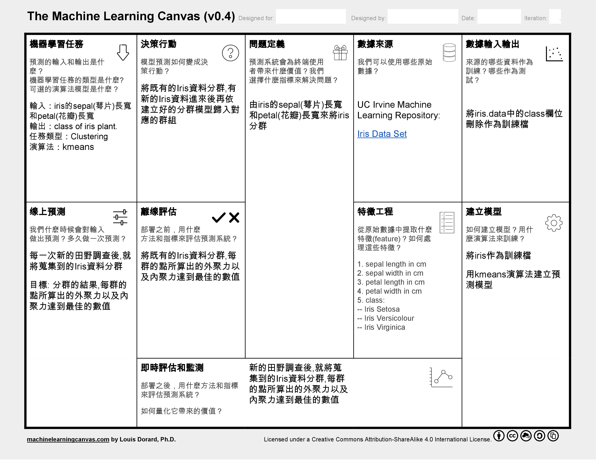

Introduction
群聚（Cluster）是一群資料項目（data objects），而分群（Clustering）這個動作是把資料依相似性分成幾個群聚
，同一群聚內資料相似愈相似愈好，不同群聚之間的資料差異越大越好。
分群是非監督式（Unsupervised）學習，無預先設好的類別標籤。
常見的應用為：了解資料分佈的工具(stand-alone tool)，或作為資料前處理（preprocessing）的方法。
Example
欲解決的問題
由iris的sepal(萼片)長寬和petal(花瓣)長寬將iris資料分群
 Iris sepal and petal
Iris sepal and petal
資料欄位說明
1. sepal (萼片) length in cm
2. sepal (萼片) width in cm
3. petal (花瓣) length in cm
4. petal (花瓣) width in cm
5. class:
-- Iris Setosa
-- Iris Versicolour
-- Iris Virginica
資料來源
UC Irvine Machine Learning Repository: Iris Data Set
建立訓練資料
將iris.data中的class欄位刪除，另存成csv檔作為訓練檔（ 下載 1.8 kB ）
模型建立方法
用kmeans演算法建立預測模型
模型結果預覽
Step by Step
跟著以下流程操作示範，即可輕鬆建立Iris資料分群模型 [ 整個流程約5分鐘 ]
1.建立專案 Create Project
建立Clustering Project以進行KDD流程訓練模型，並可將模型Export成API
InAnalysis User Dashboard
1. 回到InAnalysis User Dashboard
2. 進入Project Management, 可新增、修改、刪除Project
3. 進入API Management, 可新增、修改、刪除API
4. Documentation, 教學網站連結與範例資料檔案
5. Machine Learning Server Situation, 顯示Server是否正常啟動
6. Number of Projects, 顯示使用者建立的Project數量
7. 進入Project Management, 可新增、修改、刪除Project
8. Number of API, 顯示使用者建立的API數量
9. 進入API Management, 可新增、修改、刪除API
我們在這個頁面點選2.或是7.進入Project Management, 開始機器學習的流程

Project Management
1. 選擇Project Type, 四種Project Type有不同的任務
2. 輸入Project的名稱
3. 新增Project
建立Clustering專案

成功新增Project後點選KDD, 開始機器學習的流程
2.檔案上傳 Data Input
上傳csv資料檔案以進行KDD流程

KDD：Data Input
1. 點選可看到KDD各個流程的詳細說明
2. 提示欄，建議使用者下一個步驟可以做什麼
3. Model Management，這個Project訓練出來的所有模型可在這邊瀏覽，修改資訊或Export成API
4. 選擇資料上傳的階段
5. 從本機端選擇資料
6. 點選進行資料上傳
7. 顯示Server是否正常啟動
上傳完成會看到該資料的操作欄位

Data Information
1. 顯示上傳資料的檔案名稱
2. 點選可看到該資料的操作紀錄說明
3. 顯示該資料所在的Server
4. 顯示資料欄位數量
5. 顯示該資料被設為標籤的欄位名稱，若該資料無標籤則顯示「No Label」
6. 點選按鈕可對該資料進行各項操作處理，綠色為系統建議的下一步操作
7. 點選預覽整份資料
8. 點選可下載資料
9. 點選會將該資料刪除
我們點選7.Preview來預覽整份資料

Data Viewer
1. 正在預覽的資料檔案名稱，與檔案所在的Server
2. 顯示該資料的所有欄位名稱
3. 顯示該欄位的第一項資料
4. 顯示該欄位的資料型態
5. 顯示該欄位的資料平均值，若為非數值型態則會顯示「-」
6. 顯示該欄位的資料標準差，若為非數值型態則會顯示「-」
7. 點選可看到該欄位的所有資料分佈直方圖
8. 點選回到KDD流程
3.資料前處理 Data Pre-process
這個步驟可對資料進行缺值過濾、常態分佈離群值過濾、正規化等預處理

從Function欄位中, 選擇Data Pre-processing按鈕, 開始進行資料預處理(Pre-process)

Step 1
1. 正在處理的資料檔案名稱，與檔案所在的Server
2. 選擇欄位
3. 預覽該欄位的資料分佈直方圖
4. 取消回到KDD流程頁面

Step 2
1. 對資料進行缺值過濾，如果該列資料有NAN則會刪除該列資料，這個步驟能夠確保訓練時不會因為資料不齊全而出現錯誤
2. 對該欄位資料進行利用常態分佈離群值過濾，1 std表示將過慮掉1個標準差以外的離群資料，0 std表示不對資料做離群值過濾
3. 執行上述處理並預覽該欄位處理過後的資料分佈直方圖
4. 取消處理動作回到Step 1選擇欄位

Step 3
1. 選擇Normalize的演算法
2. 選擇欲進行Normalize的資料欄位，進行Normalize能夠將資料Scale到相同的range
3. 輸入處理過資料的新檔案名稱
4. 儲存處理過的新資料，並回到KDD流程頁面 5. 取消處理動作，不儲存處理過的新資料，並回到KDD流程頁面
這個範例將資料進行缺值過濾、常態分佈離群值過濾處理，然後將sepal length及sepal width正規化（
下載 檔案觀察資料變化，3.4 kB）。
處理後的檔案成功儲存後回會到KDD頁面,進行下一步特徵選擇
4.特徵選擇 Feature Selection
這個步驟是利用Pearson Correlation演算法計算各個Feature間的關係程度,以作為選擇Feature的參考
KDD：Feature Selection
1. 提示欄，說明剛剛成功儲存了pre-processed過的檔案
2. pre-processed過的新檔案
3. 功能欄現在建議對該檔案進行Feature Selection的動作
我們從功能欄點選Feature Selection，開始進行特徵選擇
Feature Selection
1. 正在進行特徵選擇的資料檔案名稱，與檔案所在的Server
2. 選擇計算特徵關係係數的演算法
3. 顯示該欄位的資料平均值
4. 顯示該欄位的資料標準差
5. 顯示該欄位的平均關係係數
6. 顯示該欄位對應其它欄位的關係係數
7. 選擇要留下來的特徵
8. 輸入新檔案名稱
9. 儲存新資料，並回到KDD流程頁面
10. 不儲存並回到KDD流程
這個範例選擇sepal length, petal length, petal width 這三個特徵（
下載 檔案觀察資料變化，2.0 kB）。
成功儲存後回會到KDD頁面,進行下一步模型訓練
5.模型訓練 Model Training
這個步驟能夠選擇演算法對資料進行模型訓練，並預覽訓練出來的模型
選擇Model Training的功能Model Training
1. 正在進行模型訓練的資料檔案名稱，與檔案所在的Server
2. 選擇模型訓練的演算法
3. 設定演算法參數，或直接使用預設值
4. 輸入模型名稱
5. 進行模型訓練
6. 回到KDD流程

Model Preview
1. 選擇兩個資料欄位
2. 顯示訓練好的模型圖
訓練出來的模型可以在Model Management頁面管理

Model Management
1. 模型名稱
2. 模型訓練使用的演算法
3. 訓練使用的檔案及參數
4. 將模型匯出成API
5. 修改模型資料
6. 刪除模型
6.建立API Export API
這個步驟能夠將訓練好的模型建立成API，以利更多的應用
選擇Export API的功能Set API Input
1. 輸入API的名稱，以及API功能描述
2. 輸入自訂的API Input Key
3. 輸入API Input描述

Set API Output
1. 輸入自訂的API Output Key
2. 輸入API Output描述
3. 儲存並建立API
4. 不儲存回到Model Management
建立API後，會顯示API呼叫URL以及API輸入輸出的json格式

Show API Format
1. API的名稱
2. API的呼叫路徑
3. API Input格式
4. API Output格式
點選上方功能列的API ，可以檢視全部建立好的API

Model Training
1. 輸入API的名稱
2. API功能描述
3. API建立資訊
4. 編輯API
5. 刪除API
Machine Learning Canvas機器學習畫布
Machine Learning Canvas(機器學習畫布)的框架分為4個部分：問題定義、模型預測、模型學習和系統評估， 這個畫布能夠幫助機器學習團隊釐清開發應用時所會面臨的問題
Machine Learning Canvas_空白畫布可由此下載